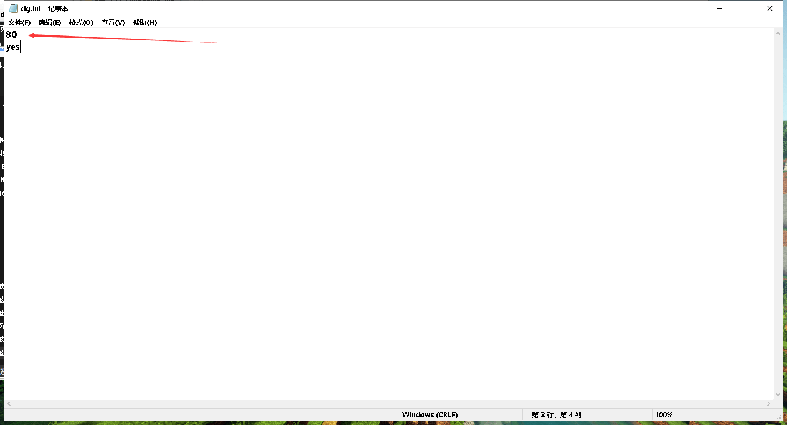

作者:UT381
如何使用我们搭建的frp
下载了我们的软件然后在输入框输入您的本地端口，比如游戏内提示您的本地开通的端口，列如Minecraft服务器常用端口(25565),网站端口(80,443),windows远程端口(3389)这些是通常的端口，有些端口不一样哦!
点击开始即刻映射并且自动分配端口
测试图
如何不随机分配端口给自己享用独立端口呢?
找到/cig/cig.ini
打开，你会看到一些端口
修改成你想要的端口这个比较适合Minecraft /*我们也在优化... 这是个注释不用管*/
什么是中延迟与普通模式
中延迟模式是比普通模式快一两倍，中延迟模式会消耗10-20%宽带换取低延迟，普通模式是控制加上延迟减少网络堵塞这样延迟会更加高!